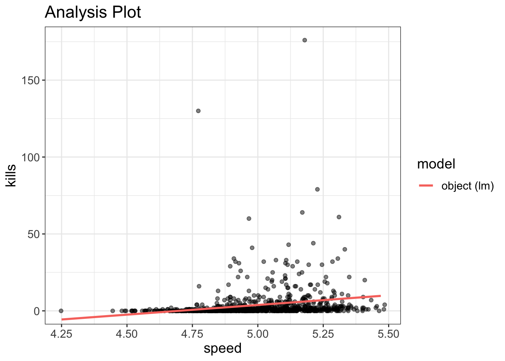
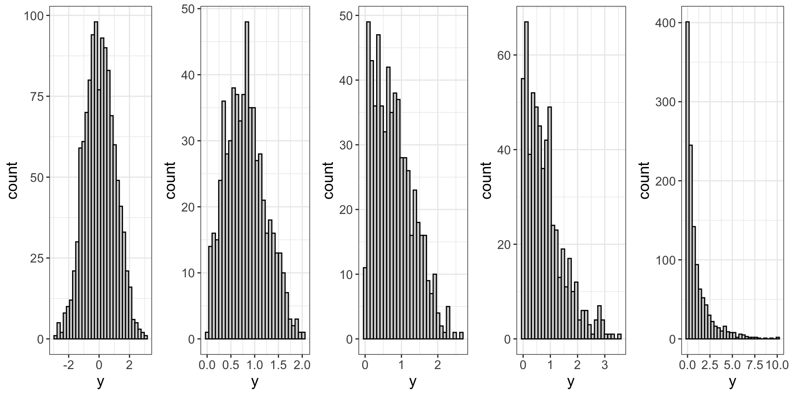
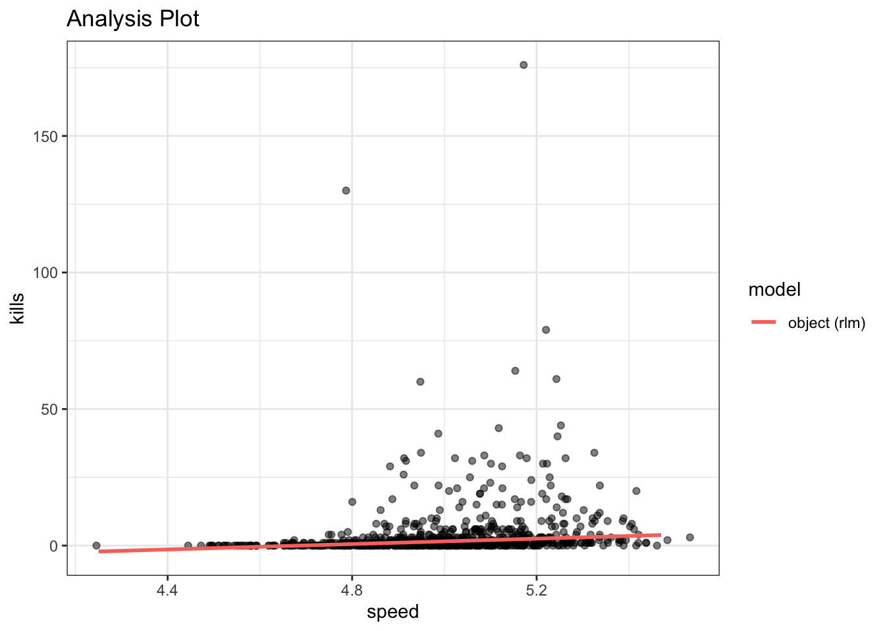
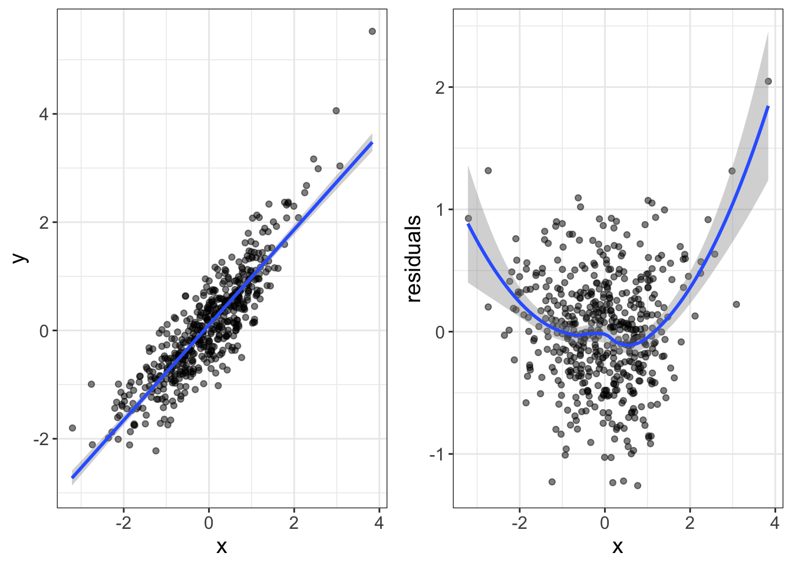
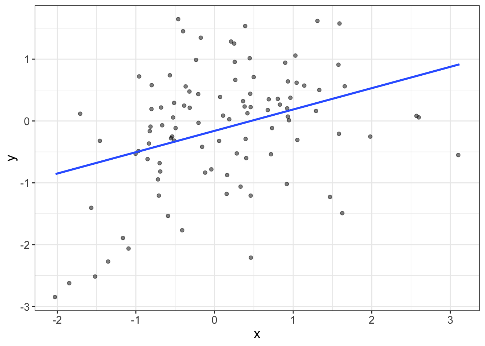
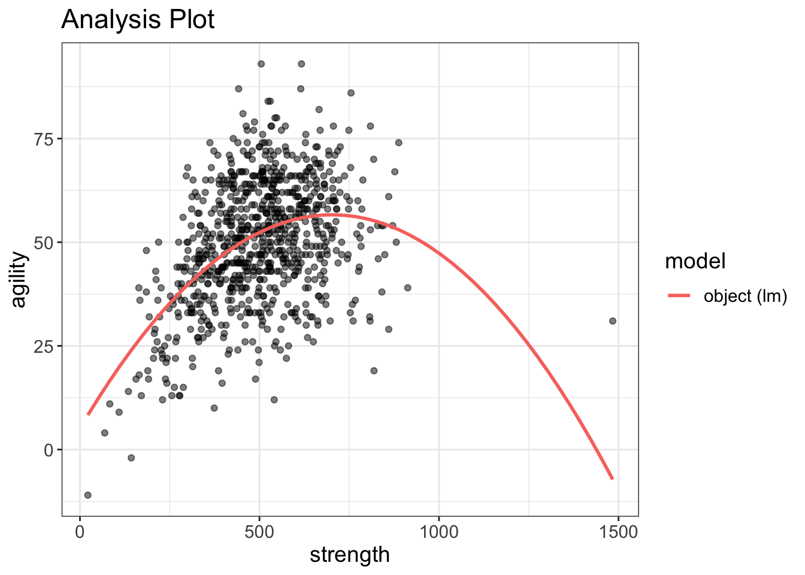
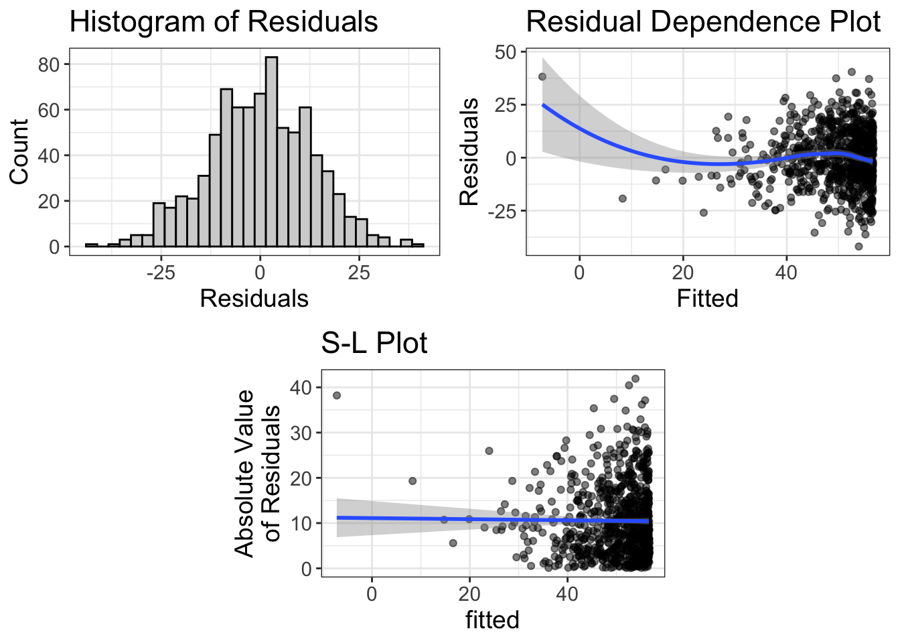
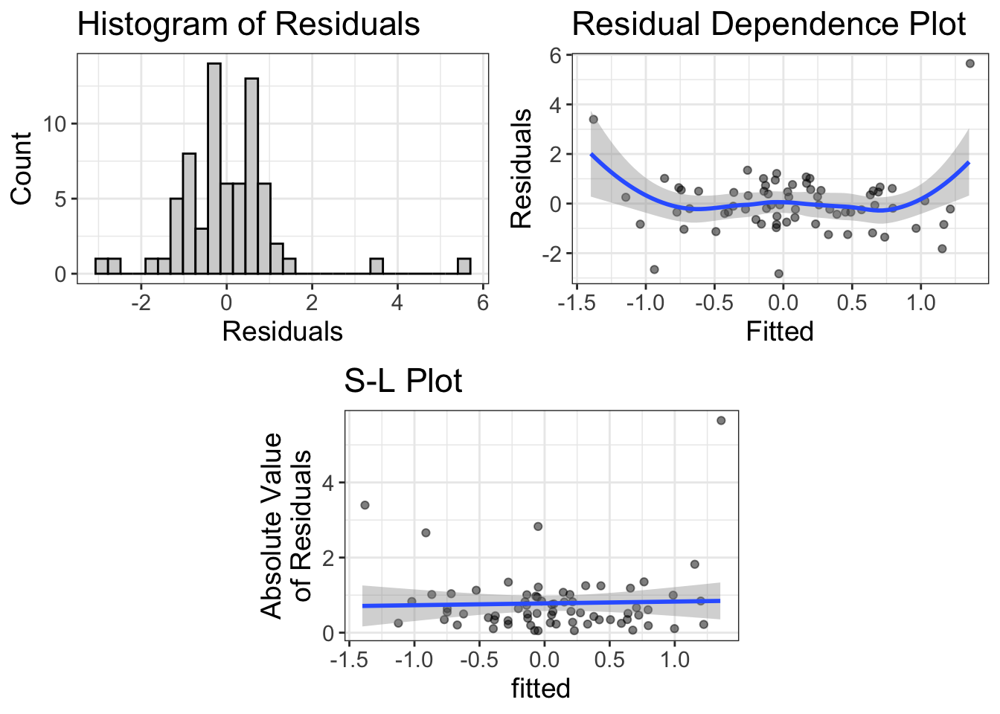
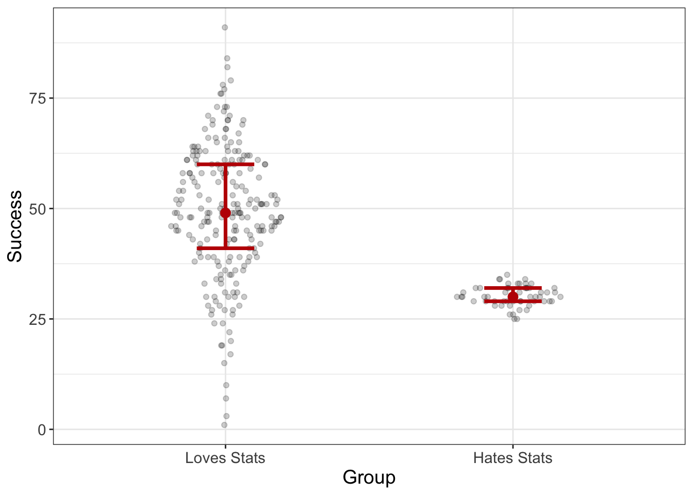
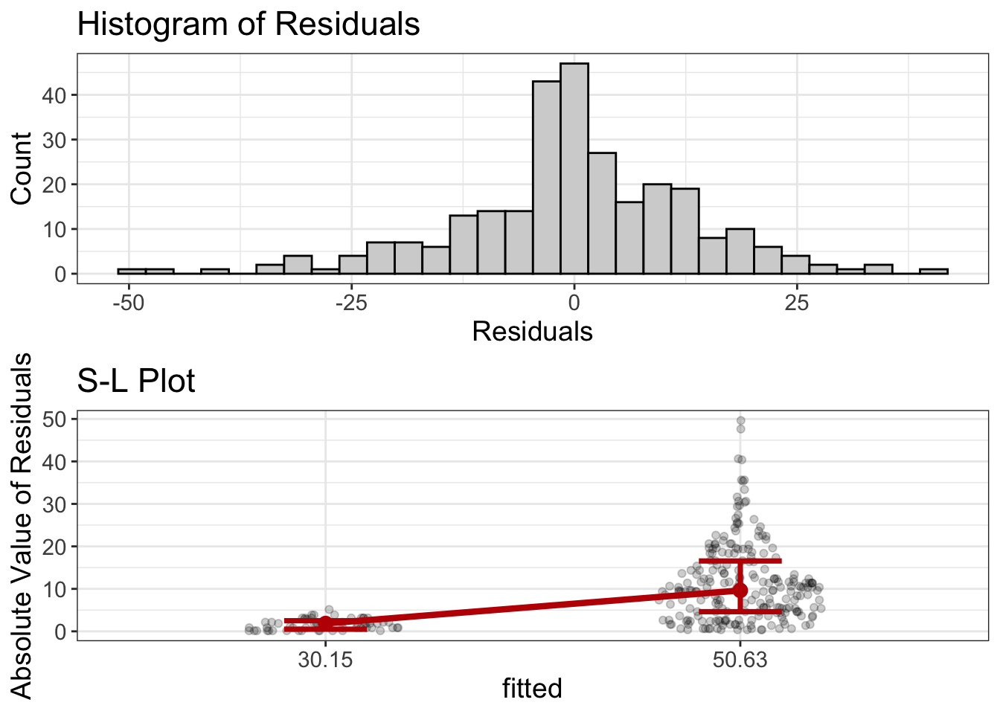

Diagnostics
Let’s say you’re right in the middle of remodeling a bathroom. You have quite cleverly managed to demo the old shower, rip up the old tile, install a new bathtub, and you have begun to tile a backsplash. Your project is way under budget. Why? Because you managed to borrow all the tools you need for the project.
Until today.
You see…you thought you’d be able to tile the backsplash without buying a tile saw. Except…well…tiling without a tile saw really sucks.
None of your friends have a tile saw and renting one from Lowe’s Depot would cost half the price of buying it outright.
So you decide to splurge. You hop on to Lowe’s Depot dot com and order a $500 tile saw with free delivery!
Nice.
After a few days, the UPS guy knocks on your door with a package in tow. Except, there’s something wrong.
The package seems really small. Like, the size of a squirrel coffin.
Hmmm…
Well, you reason, them package designers are quite impressive. I never thought they’d be able to fit an entire tile saw inside something no bigger than a shoebox.
So you open the package, excited to see your new tile saw.
Except it isn’t a tile saw.
It’s a hammer.

Now there’s nothing wrong with a hammer. In fact, you just used a hammer to demo the old drywall.
But a hammer can’t cut precise shapes on tile. For that, you need a tile saw.
Now, let me say that again because I worry the hammer’s feelings might get hurt. There’s nothing wrong with a hammer. That hammer is useful, nay essential for many situations. It’s just the wrong tool for this job.
Models are tools. And they don’t have feelings.
Statistical models are tools. Some models are hammers. Some are tile saws. Some are plumb bobs or tape measures or dado jigs or dust collectors. These statistical models are designed to handle certain types of situations and they do quite well. But if one uses a statistical model in a situation it’s poorly equipped to handle…let’s just say it will be like trying to hammer a tile into a precise shape.
Fortunately for you and I, statistical models don’t have feelings, so they don’t care if you use them or not. But humans do have feelings. For some odd reason, humans get quite attached to particular models. ANOVAs. T-Tests. Regressions. Chi-Squares: all models designed for different situations. Yet, for some, if you tell them their models isn’t appropriate for that particular situation, they pitch a fit.
Well…not really. They pitch an academic fit, which means they simply say, “Yeah, don’t care. I’m going to use this model anyway.”
The problem is that when one uses a statistical model in a situation it wasn’t designed for, you’ll get poor model performance.
Let’s take a look at an example, shall we?

Figure 1: The blue line is clearly a poor-fitting model. Red is good. Yay.
Notice there are two lines, or two models of the data. The red model is like the tile saw: it was designed for situations just like this. The blue line, on the other hand, is a little out of its element; it’s trying to fit a straight line to a relationship that is clearly not straight.
Once again, there’s nothing wrong with the blue model. It’s just trying to fit something it was never designed to fit.
This chapter is designed to give you some tools to help assist in identifying whether the chosen model is appropriate. But before we do that, we need to talk about what a residual is.
Residuals
A residual means “what’s left over.”
Left over after what, you ask?
Remember the equation for a line?
\(y = b_0 + b_1 x + e\)
See that \(e\)? That’s our residual. A residual is what’s left in our data after we’ve fit the model.
Let’s look at that equation in several different ways. Each of these ways are saying the same thing:
\[ \begin{align} y =& b_0 + b_1 x + e \\ y =& \text{line} + \text{residual} \\ y =& \text{fit} + \text{remainder} \\ y =& \text{signal} + \text{noise} \end{align} \]
Nearly every statistical model can be dissected into these two components: the fit and the residual.
Let’s look at a geometric interpretation of a residual, shall we?
The figure below shows a blue line (which is the regression line) and a bunch of red lines. The blue line is the fit. The red lines are the residuals. A residual is simply the difference between what we thought the score would be and what the score actually is.

So why do residuals matter? Residuals tell us what we did not fit in our model. It turns out, knowing what wasn’t fit is pretty useful for determining whether our model is bomb-diggity, or whether our model just bombed.
Diagnostic tool # 1: Histogram of the residuals
Remember, back in Chapter 4, how I said we like normal distributions? Well, it turns out, we actually really like normal distributions. All the models we’re going to cover in this book assume the residuals are normally distributed.
Distribution of the residuals
When statistical models make assumptions, they are made about the residuals of the statistical model. For example, we never assume the dependent variable is normally distributed or the independent variable is normally distributed; we assume the residuals are normally distributed.
Why is the assumption about the residuals? When we talk about probability, it will make more sense. But long story short, eventually we’re going to make inferences about datasets beyond our own. Those inferences are going to make guesses based on how our residuals behave.
And sometimes a variable can be crazy distributed, but the residuals are fine. For example, we might have a sample of football players and basketball players. Suppose we measure height. The distribution of height is going to be bimodal (one mode for the basketball players, one for the football players). However, once we model athlete type (b-ball versus football), then subtract that fit from the model, the residuals are probably going to be normal.
Why do they assume a normal distribution? Well, you actually know this already. Really, you do. You just didn’t know you knew it.
Remember in a previous chapter when we said it doesn’t make sense to compute a mean with data that are skewed? Also remember how I mentioned that bivariate estimates are conditional means? Well, it turns out that most statistical models are simply different ways of computing conditional means. If the data are not normally distributed, computing a mean doesn’t make sense. So, we assume the residuals are normally distributed because our statistical models are all mean-based.
Make sense?
The easiest way to assess normality of the residuals is simply to plot a histogram of the residuals. To do we, we actually have to fit a model. We’ll actually spend a lot of time fitting models in later chapters, so I’ll go into more detail later. But, to give you the basics, you can fit a “linear model” in R using the function lm. Do it with me:
# load flexplot
require(flexplot)
# load the avengers dataset
data(avengers)
# fit a linear model, or 'lm'
model = lm(kills~speed, data=avengers)The above model (called model…I know, original name, huh?) tries to predict the number of kills in the final avengers battle from the speed of the person. Let’s go ahead and visualize it like we did before using the visualize function.
visualize(model, plot="model")
Hmmm…That one looks a bit odd.
We can also look at the residuals as follows:
residuals(model)#> 1 2 3 4 5 6
#> -4.46286435 18.41768747 -0.82120888 3.14706642 -2.95969188 -0.19224329
#> 7 8 9 10 11 12
#> -2.33072629 -6.73983034 -0.59500240 -3.46286435 -2.33707123 5.60058505
...Except that’s not all that helpful. I don’t need to turn all red-faced again about how the world needs graphics? You know that, right?
To visualize the residuals, I’m going to show you a hard way and an easy way. Why would I show you a hard way? Because that’s how things used to be done, back I invented flexplot. And if I had to suffer, so do you! Well, not really, but it will help you appreciate the suite of tools in flexplot
Back in the day, to visualize the residuals, you’d have to do something like this:
hist(residuals(model))Or, using the flexplot function, we could do the following:
avengers$residuals = residuals(model)
flexplot(residuals~1, data=avengers)Okay, I guess neither approach wasn’t too hard. But, what I’m about to show you is easier. And, you kinda already know how to do it. Earlier I mentioned that we can visualize statistical models using the visualize function in flexplot. Remember how I said we’d talk about residuals later?
Yeah. Here we are.
Sorry to make you wait. That was rude of me.
Anyhow, to visualize the model, just type the following:
visualize(model, plot="residuals")
Now, it presents three different graphics. But this is the normality section, so I’m only going to talk about the top-left figure. If you can’t wait for the others, skim ahead, by all means.
The top-left image is the histogram of the residuals. This image will give us a good idea whether our mean-based models are appropriate. If this histogram deviates from normal, we might be at risk of using the wrong tool.
Fortunately for you and me, I’ve already taught you to interpret histograms. As before, we’re looking for a normal distribution. As before, we hope we don’t see outliers, zero-inflated distributions, bimodality, skewness, etc. And, unfortunately, these residuals look pretty bad.
Of course, no distribution is perfect. There will almost always be some deviations from normality. How do you know if what we have is enough to muck things up? That, my friend, is a good question. And, truth be told, a bit hard to answer. Statisticians of the past have tried to answer that by performing objective “tests,” such as the Anderson–Darling test, the Cramér–von Mises criterion, and the Kolmogorov–Smirnov test. (What colorful names!)
These tests are designed to detect deviations from normality. The basic idea is, if your statistical procedure can detect a departure from normality, your statistical model is in trouble.
But is it really? Well, no.
Tests of Statistical Assumptions
There are loads of test available, designed to test whether one’s sample deviates significantly from normality, homoscedasticity, independence, etc. With these tests, the null hypothesis is that the assumption is met. (See Chapter 13 to learn more about null hypotheses). In typical null hypothesis testing, researchers are trying to reject the null hypothesis; rejecting the null = accepting the researcher’s chosen hypothesis. With assumption tests, on the other hand, you don’t want to reject the null hypothesis. Doing so means that there are normality (or homoscedasticity or independence) problems.
These tests are pretty useless. (Maybe this should have been a rant box?) Much like the other null hypothesis tests, these are sensitive to sample size. So, if you have a small sample size, even extreme deviations from normality (or other assumptions) will pass. On the other hand, with large sample sizes, even trivial deviations reject the null hypothesis.
Once again, being able to detect a deviation from the assumptions doesn’t mean it’s actually going to screw up your analysis.
Rant: Does Normality Really Matter?
Back in the 1980s, a fellow by the name of Micceri (1989) wrote one of the best titled papers in all of science-dom: “The unicorn, the normal curve, and other improbable creatures.” You gotta love a guy who has a sense of humor.
His major point was that most psychological research relies heavily on statistics, which assume a normal distribution. Alas, Micceri points out that very few variables in psychology are actually normally distributed.
Therefore, psychology is broken.
Ho hum. Ba humbug. I’ve got series beef with how various disciplines abuse statistics. But normality is very low on my gripe list. Why? Because there’s a massive difference between having a dataset that has a detectable difference from normality and a dataset that has a problematic difference from normality. In other words, just because you can detect departures from normality, that doesn’t mean it will actually screw up your analysis.
In fact, dozens of studies have been conducted that show that even pretty large departures from normality may not affect statistical models at all. In stats-speak, we say that most statistical models are “robust” to non-normality.
But what exactly does that mean? That means that estimates obtained from non-normally distributed data will be pretty close to population values. Likewise, when making decisions (e.g., this relationship is statistically different from zero), the “right” decision will be pretty close, regardless of normality or not.
How do you tell whether deviations from normality are bad enough to abandon my original tool (model)? I still haven’t answered the question, have I? In the figures below, which of my models should be abandoned?

You’re not going to like the answer(s).
I don’t know. Experience helps. In my judgment, the far right is certainly problematic. The far left is certainly okay. I’d say by the third plot from the left, that’s going to be problematic.
So, it’s a bit subjective. But, we’re okay with subjectivity. We’re okay with uncertainty. It protects us from making stupid decisions.
But, I do think there’s a better answer: do a sensitivity analysis.
Sensitivity Analyses
The basic idea behind a sensitivity analysis is to run a model multiple ways. For example, we might fit a model that assumes normality, then fit another model that doesn’t. If both models are basically saying the same thing about the data, then who cares if our model deviates from normality? It doesn’t change the decision we make about the data.
On the other hand, if the models yield substantially different conclusions, then our model is probably not robust and we ought to choose the more complex model.
So let’s go ahead and try it. I’m going to introduce you to a “robust” version of the model, but I’m not going to explain it in detail. That’s beyond the scope of this book. But here’s the short of it: magical fairies eat your troublesome data and sprinkle fairy dust on your fitted lines.
Does that help?
With that explanation, here’s the fairy-guided analysis:
require(MASS)
fairy_model = rlm(kills~speed, data=avengers)Now, we can visualize both models. (By the way, there’s a much better way of visualizing a pair of models, but we won’t get to that until a later chapter. In the mean time, you and I will have to suffer through a more verbose method).
require(MASS)
visualize(model, plot="model")
visualize(fairy_model, plot="model")
It’s a bit hard to tell because of the outliers, but if you look closely at the two models, it’s quite clear that, at least for these variables, the two models have pretty different fits. In other words, the lack of normality is a serious problem.
Oh well.
Diagnostic tool # 2: Residual Dependence (RD) Plot for Linearity
Statistical Models are Lazy
Suppose you wanted to walk from the goal-post of one endzone on a football field to the other. What’s the quickest way to do so? Should you trance up the bleachers, do a cartwheel in the parking lot, crabwalk to the nearest McDonald’s, then moonwalk to the other endzone? No!
You will minimize travel if you walk directly from one endzone to the other, in a straight line. It’s the laziest option.
Well, it turns out statistical models are quite lazy. They too prefer straight lines. Can statistical models fit data with non-straight lines? Sure. We call those nonlinear models. But, statistical models are lazy. They don’t want to bend their lines if they don’t have to.
Let’s have a look, shall we? The code below fits the same relationship we saw before (between agility and strength). When we visualize the data, we can clearly see that the relationship is nonlinear. So, no surprise, if we try to fit a straight (lazy) line to this relationship, that’s a problem!
flexplot(agility~strength, data=avengers, method="lm")Figure 2: This relationship is NOT linear, but the fit might deceive us into thinking it is!
Residual Dependence Plots
It seems our eyes are often a little too trusting. If you were to look at the first image (Figure 1), the nonlinearity is very apparent. But if we were to only look at the image above (Figure 2), we might not see that nonlinearity.
That’s where the second type of plot comes in. It’s called a “residual-dependence plot.” Let’s go ahead and take a look at that sort of plot:
model_with_boring_name = lm(agility~strength, data=avengers)
visualize(model_with_boring_name, plot="residuals")
As before, the first plot shows a histogram of the residuals. We’re cool there; the data are normal, symmetric, beautiful, and all that jazz. But the second plot is problematic. What this plot shows is a scatterplot between the “fitted” values (which, in this case, is the variable strength) and the residuals.
Why do we want this? Okay, remember how I said that residuals show us what remains after fitting our model? In the code above, we fit a linear model. So what do the residuals tell us? They tell us what remains after we have removed any linear relationship between strength and agility. In an ideal world, our statistical model is amazing and we have removed any signal from the data. In other words, what should be left is no relationship. However, in the plot above, we can very clearly see that after we remove the linear fit, there’s still some “signal” remaining, a curvilinear effect.
Now, if you began with plotting loess lines, and/or if you had a keen eye, you probably would have seen that nonlinearity from the original plot of the raw data. What’s the point of doing a residual dependence plot? I’ve got two answers for you. First, the residual dependence plot will make the nonlinearity more apparent. For example, in the plot below, the same data are displayed as a model plot (left) versus a residual-dependence plot (right). Notice how the nonlinearity is much more apparent in the RD plot. The reason it’s more apparent is because the steep slope of the left plot masks any nonlinearity. The right plot, on the other hand, removes that slope so the nonlinearity can show through.

The second reason we use RD plots rather than model plots is because RDs can display multivariate nonlinearity more easily, which we will cover in a later chapter.
So, what are you looking for when studying RD plots? We would like to see a flat-line relationship. That, once again, tells us that our statistical model has successfully removed any association between our variables. If, on the other hand, there’s any pattern remaining, that tells us we have failed to capture something in our model.
How to Fix Nonlinearity
Now suppose there is nonlinearity. How do you fix it? Alas, that too is beyond the scope of this chapter, or maybe even this book. Fixing nonlinearity (and other problems) is really what my multivariate statistics course is all about.
But, I know how eager you are to know. So…I guess I’ll show you by adding a quadratic term to the model.
What is a Quadratic Term?
Most models we deal with are “linear.” The statistical model looks like this:
\[y = b_0 + b_1 \times X\]
Or, in R code:
lm(y~x, data=d)And the visual model looks like this:

As you know, when you fit that model, it produces a straight line, just like the image above. But, you can add what we call a “quadratic term” to the model:
\[y = b_0 + b_1 \times X + b_2 \times X^2\]
What’s going on here? What we’re doing is creating a new variable (called \(X^2\)) that is literally the same as \(X\) except we square it. It turns out that when you square a variable and add it to our original model, the resulting model shows up as a curved line:

Neato.
Unfortunately, it’s not as easy as typing lm(y~x + x^2,...); you have to tell R that the squared term should be interpreted literally, as follows:
lm(y~x + I(x^2), data=d)Why is that necessary? I’m not going to go into that. Just know that to square a term in R, you have to surround the squared term with I.
Going back to our avengers dataset, let’s curve that model:
## add a quadratic term to the model
curve_that_sucker = lm(agility~strength + I(strength^2), data=avengers)
visualize(curve_that_sucker, plot="model")
visualize(curve_that_sucker, plot="residuals")
Now the RD plot looks pretty flat (except for the far left side of the plot).
Sometimes a quadratic term will work. Sometimes it won’t. It all depends on how that curve is shaped. To learn more about complex curve fitting, you can see an example of me doing it on my YouTube channel. Or, conversely, you can wait until 2085, when I write a book about it.
How to tell if nonlinearity is a problem?
Earlier I said that statistical models are robust to non-normality. How about nonlinearity?
No.
They are not robust.
Why?
Remember how I said that models are robust if they generate similar conclusions to non-robust models? With nonlinear models, it takes very little nonlinearity for two models to make very different conclusions. Let’s look at the avengers data again, but with the two lines atop the same graphic.

These two models say very different things about the data. The lazy model says that more strength = more agility. The nonlinear model says that there’s diminishing returns and, in fact, at some point, more strength means less agility. Those are very different conclusions that could have real-world implications; the lazy model suggests professional soccer players will benefit from competitive bodybuilding.
Yeah. Right.
Likewise, the two models can generate very different predictions. Suppose you can benchpress 1,000 lbs (which is how strength is measured). The lazy model predicts your agility will be around 65. The nonlinear model, on the other hand, predicts a score below 35. That’s a massive difference in prediction!
How much nonlinearity is too much?
Okay…I’m kinda dreading writing this section. My first instinct is to say, “ANY NONLINEARITY IS TOO MUCH! MODEL THAT SUCKER!”
But I also know that’s not entirely true. You see, the problem with loess lines is that they can be heavily influenced by outlying observations. Look at the RD plot below. That loess line in the RD plot looks nonlinear at both the high and low ends of the fitted values. But the sample size is pretty small. Is that nonlinearity because of the sample size? Or is there something there? It’s hard to tell. One way to tell is to ask yourself, “Hey, good looking! If you were to remove the largest and smallest fitted values, would that loess line still bend?”

In this case, I think not. It seems those two outliers are dragging the loess line to make it seem like there’s problems with nonlinearity. But there’s not.
So, in summary, unless you suspect that outliers are dragging the tails of the loess lines, any sort of curvilinearity in an RD plot suggests our model might be wrong.
Diagnostic tool # 3: Scale-Location (SL) Plots for Homoscedasticity
Homoscedasticity: This has got to be the funnest word in all of statistics to say.
Say it with me….
Homoscedasticity! Homoscedasticity! Homoscedasticity! Homoscedasticity! Homoscedasticity! Homoscedasticity! Homoscedasticity! Homoscedasticity! Homoscedasticity! Homoscedasticity!
Oh that’s too fun.
I’ll give you a minute to recuperate.
What does homoscedasticity mean? That means that the variability across our fitted values is about the same.
I know, that’s a terrible description. How about a visual?

This graphic has heteroscedasticity, or non-homoscedasticity, which means that the variance (or spread) in each group is not equal. We can also have heteroscedasticity for numeric predictors:

Notice how the spread of Y increases as X increases.
That’s bad. We don’t want that.
Why?
Lemme put it this way: regression models should be democratic. Every datapoint should give equal “vote” to what the value of the regression line should be. Remember, the regression line is trying to be best buds with every datapoint. In other words, it’s trying to be as close as possible to every observation. Under a democratic model, this will generally mean that the regression line passes through the densest parts of the data. However, with heteroscedastic data, those areas with larger variances (e.g., near 2.0 in the above figure) will have more “pull” with the regression line. That means that models may buddy up to those areas with large variances while somewhat disregarding those areas with smaller variances.
Wanna see an illustration of that going haywire?
I knew you did.
The example below shows two subgroups: the left subgroup has a very small variance (i.e., the variance of Y is small). The right subgroup has a very large variance. The regression line should be democratic and give each subgroup equal weight. But it’s not. It’s favoring the right subgroup.

Why?
Because of heteroscedasticity!
But there’s another reason heteroscedasticity is bad. Many estimates and other statistics use a single value as the estimate for the spread. For example, remember Cohen’s d?
\(d = \frac{\bar{x_1}-\bar{x_2}}{s_{pooled}}\)
The denominator (\(s_{pooled}\)) is a single value that is supposed to represent the spread of the distribution. But we know that, with heteroscedasticity, spread increases (or decreases) across the values of \(X\). So using a single value to represent spread doesn’t actually make sense.
Spread-Location (SL) Plots
So how do we detect heteroscedasticity? Well, we could just plot the model. That would help. But sometimes it’s hard to see if heteroscedasticity is a problem. Instead, we use an SL plot.
Like RD plots, SL plots display the fitted values (X) on the x-axis. However, the Y axis shows the absolute value of the residuals. The basic idea is that when assessing heteroscedasticity, some residuals will be higher than the fitted line (i.e., the residuals are positive) and some will be lower. We really don’t care whether they’re higher or lower. We just want to know how far from the line they are. By computing the absolute value, these tell us simply how far from the line they are (regardless of direction). Then, when we plot those against X, we can see if there’s a consistent pattern of increasing (or decreasing) as X increases.
If we were to visualize the stats-coolness dataset, for example, we would see something like this:
mod = lm(Success~Group, data=stats_coolness)
visualize(mod, plot="residuals")
Notice there’s no RD plots. The reason is because linearity is a given for categorical variables. (The “fit” or slope between any two groups has to be linear). Also, the residuals look normal. So that’s good.
But…holy gamoly! The SL plot looks a little wonky. Remember, we want the line to be flat. And that ain’t flat. Instead, the line indicates that spread increases as the fitted values increase. In other words, we’ve got a problem with heteroscedasticity.
So…how do we fix it? Again, that’s beyond the scope of this chapter (and this book). But, for those who would send hate mail if I don’t answer, here’s the short of it. We can use weighted least squares, which allows those values with smaller residuals to have more “pull” in voting on the value of the regression line. Here’s the R code to do it, which seems to make things a bit better:
## fit a model that ignores heteroscedasticity
bad_bad_bad_model = lm(y~x, data=wonky_variance)
## create "weights"
weights = 1 / lm(abs(bad_bad_bad_model$residuals) ~ bad_bad_bad_model$fitted.values)$fitted.values^2
## fit a new model that weights the residuals
good_model = lm(y~x, data=wonky_variance, weights=weights)
visualize(good_model)
Outliers
I’ve talked about outliers quite a bit, haven’t I? You’re smart enough to know that outliers can really screw things up. But outliers don’t have a dedicated plot like the other assumptions do.
Why? Well, that’s mostly because any of the three plots I mentioned will show outliers. They’re not all that hard to identify.
So how do you deal with them? That’s really up to debate. Some people are heartless, butchering datapoints if they fall too far beyond the mean. For example, the robust models I mentioned earlier default to removing the upper and lower 10% of the distribution. Yikes! But, they have their reasons. Outliers can really screw up a model and generate senseless predictions and/or conclusions. By only modeling the center of the data, you’re much less likely to have a senseless model.
Others, the “outlier-huggers” as I call them, protest the destruction of datapoints, chaining themselves protectively to the outliers and facing down the riot gear of the analyst. Their basic argument is that these datapoints reflect real observations. If we start getting rid of data willy nilly, we limit our ability to generalize our results to real situations. For example, we might collect weight loss data from a hundred people and see how correlated weight loss is with calorie consumption. Is it possible to have someone in the sample who lost 200 pounds? Absolutely! Perhaps that person was on the Biggest Loser. If we eliminate that person, our model is no longer trying to estimate the relationship between calorie consumption and weight loss for all people. Instead, it’s estimating the relationship for those within a fairly arbitrary range.
I can see it both ways. Outliers can really screw things up, so removing them can ensure that the model isn’t unduly influenced by wonky datapoints. On the other hand, those datapoints are real datapoints that we might be interested in.
So what do we do?
Sensitivity analyses. It worked before, right? Maybe we fit one model with the outlier and one without. Then we can compare the two models. If the fits of both models are essentially the same, then it doesn’t matter. If the fits are different, then of course we could choose a model. If we do, we should report both results. On the other hand, we don’t have to choose a model. We can withhold judgment until we gather more data.
Let me say one more thing about outliers. They’re really only a problem with small samples. With large samples, even massive outliers will change the fit of the model very little. In other words, with large sample sizes, sensitivity analyses will tend to show the two models are pretty similar.
Independence
You ever see the show Quantico? For those who haven’t, I’m going to spoil a major plot point. You might wanna skip ahead.
Actually…don’t. Because this metaphor is kinda important. So, stop reading, go binge watch the first few episodes. Then come back and bask in the beauty of my rhetoric.
It’s okay. I’ll wait.
Back?
Good.
Okay, so in the show, there are two identical twin sisters training to be FBI agents: Nimah and Raina Amin. For the majority of the season, nobody in their training group had any idea they were two different people. They always just assumed there was one person: Nimah. Few in the FBI administration even knew.
Now suppose you are in charge of tracking training statistics, including retention. Further suppose you had 100 applicants start at Quantico, but only 80 completed. What is your retention rate?
80%, right?
Wrong.
Why? Because you didn’t know that Nimah was actually masquerading as a single person when she (they) were actually two people. So, what is your real retention rate?
\(81/101 = 80.2%\)
Close enough, right?
But what if half of the 100 applicants had an identical twin? Would it surprise you at all if most of the time when one twin quit, the other did too? Probably not. Twins that quit together get to get drunk together. And party. And contemplate the meaning of life and ponder the existential crisis of unemployment. In other words, the probability one person quits is heavily dependent on whether their twin quits.
This, in a nutshell, is an illustration of the assumption of independence. Independence states: the scores for one participant do not influence the scores of another participant.
In this example, having one twin drop out will almost certainly increase the chances that the other twin will drop out.
In statistics, there are three common situations where we violate this assumption:
- If we measure the same people twice. Obviously, the way I respond to a “Libertarians for Bernie” questionnaire at Time 1 will be correlated with my response to the same questionnaire at Time 2.
- If we measure people who are related in some way (e.g., husband and wife, two twins, father and son)
- If we measure a particular “cluster” (e.g., a bunch of students who were taught by the same instructor).
In any of these cases, the individual scores are probably going to be correlated with one another.
Why do models assume independence?
Why is this a critical assumption?
Damn good question, that. And, I’m gonna be honest. I’m really struggling with writing this explanation. Why? Because my metaphor doesn’t stretch as far as I want it to. The more I try to extend Quantico to statistics, the more I realize the limits of my metaphor. And, the reason is kinda technical and delves into probability (which we haven’t covered).
But let me give a conceptual answer. Actually, to cover my assets, let me give two conceptual answers.
If scores are correlated, you are missing an important predictor of the outcome. Remember when we talked about linearity and I said that we want to capture all the signal between X and Y? If a nonlinear trend is present, it would be misleading to pretend it’s not there. In fact, it would return a bad model. We needed to add that curvilinear element to improve our predictions.
Likewise, if we have twins in our data, that’s an important piece of signal. If we ignore it, we’re going to generate bad predictions. For example, suppose Gus’s twin (Goose) drops out of the program. A model that incorrectly assumes independence might guess Gus’s probability of quitting to be 20%. But, once again, if Gus’s twin drops out, his probability of dropping out is going to be much higher than the norm.
That there is probably the most conceptual, least mathematical explanation. Now to a slightly more technical explanation.
Independence screws up degrees of freedom. Wow. That’s an archaic statement to make. It was really put there to satisfy the pedantic statisticians and convince them I know what I’m talking about. (Honestly, sometimes this crass writing style harms my credibility).
WTF does that mean? Long story short, we eventually want to make probabilistic statements, such as “What is the probability that a randomly sampled applicant will dropout of Quantico?” These probablistic statements are based on our current sample size. To compute the probability someone will drop out of Quantico, we will use information from our current sample, including the sample size. If our sample size is 100, but we really have 50 pairs of identical twins, our sample size isn’t really 100. It’s probably more like 50 because identical twins are…well…you know…identical. So, if we compute a probability as if our sample size is 100, but it’s really 50, we’re going to really screw things up.
What happens if you violate the independence assumption?
It’s bad. Really bad. Statistically speaking, you’d rather have lemonade injections through an IV while sitting in a bath of ice vinegar. Violating the independence assumption is really going to screw up both your models and your inferences.
Statisticians don’t let other statisticians violate independence.
How to detect and handle dependent data?
There are graphs out there to detect dependence (e.g., autoregressive plots). Fortunately, the independence assumption is typically met unless you recruit twins, couples, or classes, or you measure somebody multiple times. So, generally, you don’t have to worry about it.
And if you do violate the assumption? No big deal, as long as you use the right model. Unfortunately, I won’t cover how to model dependencies in data. At least not in this book. (But I do on my YouTube channel!) Give me a decade and maybe I’ll write about it. But the short answer is that we use Mixed Models (aka multilevel models, mixed effect models, hierarchical linear models).
Summary
Statistical models are tools. Like tools, some models are appropriate under some circumstances, but not in others. This chapter addressed diagnostics, which is a scary overly technical word that describes various methods we can use to determine whether our model is the right tool. These statistical models make “assumptions.” When these assumptions fail, we need to be able to detect that failure so we can choose a different tool.
Many people advocate for statistical tests designed to give us an unambiguous answer about whether the assumption has been violated. These are useless. Just because an assumption has been violated, doesn’t mean that it actually requires us to change our statistical tool. Instead, this chapter teaches you to plot the data and see if the graphics suggest we need to make major modifications to our model.
Throughout, I have advocated for “sensitivity analyses,” where the analyst runs the analysis multiple ways, one where the assumption is ignored, one where it is handled appropriately. If the two models agree, you know it doesn’t really matter. If they don’t agree, then you should probably handle the violation.
A statistical model is comprised of two major elements: fit + residual (or signal + noise). A residual is what remains after fitting the model and they provide a convenient means for assessing model assumptions.
In this chapter, I talked about three major assumptions of statistical models: normality, homoscedasticity, and linearity. Normality means that we assume the residuals are approximately normally distributed, though it turns out that most statistical models don’t care all that much if we have violations from normality. We assess normality via a histogram of the residuals. If it’s normal, ’taint abnormal.
Homoscedasticity means we assume that the variance (or uncertainty) is about the same for every level of our predictor variable. We use S-L plots to visualize homoscedasticity. If this plot has a slope that’s markedly different from zero, that’s a problem. Or, as they say in the hood, “if the plot has a slope, your model ain’t dope.”
Linearity means we assume that the fit of the model is straight. But really, it means that we assume our model captures all the “signal” or fit of the model. We can use residual dependence plots (fitted on X axis, residuals on Y axis) and look for any patterns. As they say in the hood, “If a pattern is there, analyst beware.”
I also mentioned outliers, which can really pull the fit of the model away from where it should be. These may show up in any graphic. Finally, I talked about independence. Independence means that one observation has no affect on another observation, which is generally the case unless we measure the same person twice, or we collect data from couples, twins, or other sorts of clusters like classrooms. If this assumption is violated, we just need to use a model that can handle the dependence.
For a summary of the assumptions, check out my cool table.
| Assumption | Meaning | Graphic | What to look for |
|---|---|---|---|
| Normality | Residuals are normally distributed | Histogram | Symmetric, unimodal distribution |
| Linearity | Relationship between X and Y is linear | S-L Plot | Flat line with no pattern |
| Homoscedasticity | Variance is the same across all predicted values | SL Plot | Flat line with no slope |